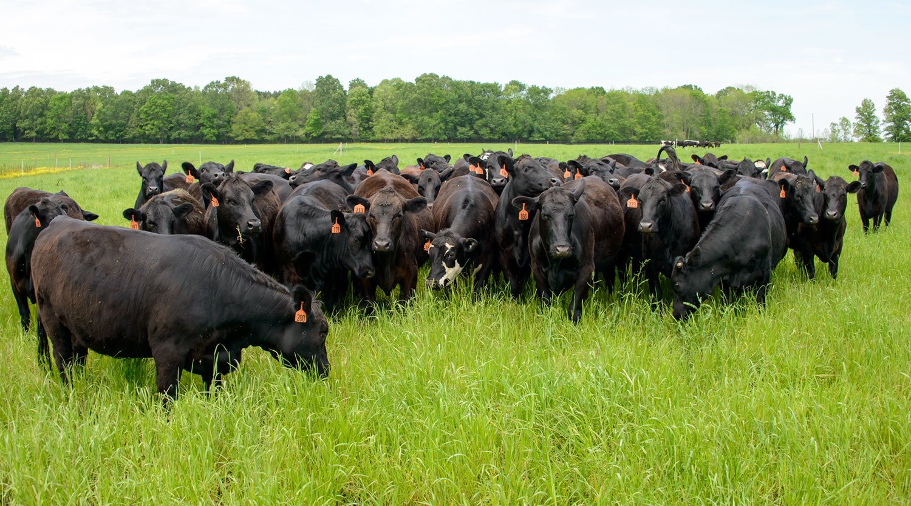

Wicklow Mountains National Park
Wicklow Mountains National Park
is located on
the southeastern side of Ireland just south of Dublin
Wicklow Mountains National Park
Wicklow Mountains National Park is located on the southeastern side of Ireland just south of Dublin. The park encompasses an area of 84.94 square miles (220 sq km). The national park is nestled in the Wicklow Mountains which serve as the namesake of the park as well as the pinnacle attraction. The mountains are rolling with heath and upland grasslands while displaying moments of exposed rock faces and cliffs. The vegetation is diverse featuring a variety of ecosystems that include blanket bog, coniferous woods, deciduous forests, heath, upland grassland, exposed rock mountains, and cliffs along with scree scattered below.
GALLERY


About park
Wicklow Mountains National Park (Irish: Páirc Náisiúnta Sléibhte Chill Mhantáin) is a 205-square-kilometre (51,000-acre) protected area in Ireland, one of six national parks in the country.[1] The park stretches through County Wicklow as well as small areas of South Dublin and Dún Laoghaire–Rathdown in County Dublin. The park is located in the Wicklow Mountains a short distance south of Dublin. It contains a variety of attractions that are popular with city dwellers seeking recreation, and areas visited by tourists and history enthusiasts.
About Animals


.jpg)


Buffalo
The African buffalo (Syncerus caffer) is a large sub-Saharan African bovine.[2] There are
five subspecies that are recognized as being valid. Syncerus caffer caffer, the Cape
buffalo, is the nominotypical subspecies, and the largest one, found in Southern and
East Africa. S. c. nanus (the forest buffalo) is the smallest subspecies, common in
forest areas of Central and West Africa, while S. c. brachyceros is in West Africa and
S. c. aequinoctialis is in the savannas of East Africa.
 The African buffalo is not an ancestor of domestic cattle and is only distantly related
to other larger bovines. Its unpredictable temperament may have been part of the reason
that the African buffalo has never been domesticated, unlike its Asian counterpart, the
water buffalo. Natural predators of adult African buffaloes include lions, hyenas, and
Nile crocodiles. As a member of the Big Five game, the Cape buffalo is a sought-after
trophy in hunting.
The African buffalo is not an ancestor of domestic cattle and is only distantly related
to other larger bovines. Its unpredictable temperament may have been part of the reason
that the African buffalo has never been domesticated, unlike its Asian counterpart, the
water buffalo. Natural predators of adult African buffaloes include lions, hyenas, and
Nile crocodiles. As a member of the Big Five game, the Cape buffalo is a sought-after
trophy in hunting.
Syrian brown bear
The Syrian brown bear's fur is usually very light brown and straw-coloured.[4] The hair
on the withers is longer with a grey-brown base and is often a different shade from the
rest of the body, seen in some individuals as a dark stripe running across the back. The
lighter colors usually appear at higher altitudes. Their legs are commonly darker than
the rest of their body. It is the only known bear in the world to have white claws. It
is a rather small brown bear. Adult males have skulls measuring approximately 30–40 cm
(12–16 inches). The Syrian brown bear weighs up to 550 lb (250 kilograms), and measures
from 101–140 cm (40–55 inches) from nose to tail.
 Populations in the Caucasus were thought to belong to Ursus arctus syriacus and to
overlap those of the Eurasian brown bear. They are larger in size and darker. In the
past, some naturalists proposed that Caucasian bears belonged to hybrid populations
between Eurasian and Syrian brown bears, but results of genetic studies show that all
populations in the Caucasus are Eurasian brown bears.[2] It was thought that these mixed
bears originated during the Holocene when Syrian brown bears supposedly migrated
northward and interbred with the larger northern bears. Today, that hypothesis is
considered by experts to be wrong. Litter size ranges from one to three cubs
Populations in the Caucasus were thought to belong to Ursus arctus syriacus and to
overlap those of the Eurasian brown bear. They are larger in size and darker. In the
past, some naturalists proposed that Caucasian bears belonged to hybrid populations
between Eurasian and Syrian brown bears, but results of genetic studies show that all
populations in the Caucasus are Eurasian brown bears.[2] It was thought that these mixed
bears originated during the Holocene when Syrian brown bears supposedly migrated
northward and interbred with the larger northern bears. Today, that hypothesis is
considered by experts to be wrong. Litter size ranges from one to three cubs
Cattle herds
Cattle are commonly raised as livestock for meat (beef or veal, see beef cattle), for milk (see dairy cattle), and for hides, which are used to make leather. They are used as riding animals and draft animals (oxen or bullocks, which pull carts, plows and other implements). Another product of cattle is their dung, which can be used to create manure or fuel. In some regions, such as parts of India, cattle have significant religious significance. Cattle, mostly small breeds such as the Miniature Zebu, are also kept as pets.  Different types of cattle are common to different geographic areas. Taurine cattle are found primarily in Europe and temperate areas of Asia, the Americas, and Australia. Zebus (also called indicine cattle) are found primarily in India and tropical areas of Asia, America, and Australia. Sanga cattle are found primarily in sub-Saharan Africa. These types (which are sometimes classified as separate species or subspecies) are further divided into over 1,000 recognized breeds. Around 10,500 years ago, taurine cattle were domesticated from as few as 80 wild aurochs progenitors in central Anatolia, the Levant and Western Iran.[1] A separate domestication event occurred in the Indian subcontinent, which gave rise to zebu. According to the Food and Agriculture Organization (FAO), there are approximately 1.5 billion cattle in the world as of 2018.[2] Cattle are the main source of greenhouse gas emissions from livestock, and are responsible for around 10% of global greenhouse gas emissions.[3][4] In 2009, cattle became one of the first livestock animals to have a fully mapped genome.
We Provide Best Guidance
To You To Look For Amazing National Parks Globally By Sitting At Your
Home
Since 1916, the National Park Service has been entrusted with the care of our national parks. With the help of volunteers and partners, we safeguard these special places and share their stories with more than 318 million visitors every year. But our work doesn't stop there.
Team Member 1
This is a longer card with supporting text below as a natural lead-in to additional content. This content is a little bit longer.
Team Member 2
This is a short card.
Team Member 3
This is a longer card with supporting text below as a natural lead-in to additional content.